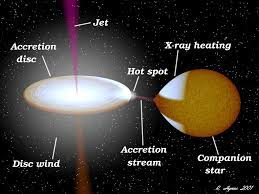

Monitoring Observations Of SMC X-1's Excursions
 Monitoring Observations Of SMC X-1's Excursions (MOOSE) is a program designed to study the low energy X-ray fluctuations of SMC X-1 as it undergoes super-orbital period variability.
Monitoring Observations Of SMC X-1's Excursions (MOOSE) is a program designed to study the low energy X-ray fluctuations of SMC X-1 as it undergoes super-orbital period variability.
Previously, researchers observed three epochs of super-orbital period variability in SMC X-1, but they never probed the properties of the accretion disc physics and its shape. Then, during the fourth observed epoch from 2020-21, and MOOSE performed spectroscopic monitoring with the Neutron Star Interior Composition Explorer Mission (NICER), an X-ray telescope mounted on the International Space Station.
With continued X-ray monitoring, MOOSE will help shed a light on the physical mechanism behind SMC X-1's superorbital periodicities and its changes in accretion disc shape.
Background and Scientific Context
SMC X-1 is an accreting neutron star X-ray binary and a pulsar. A neutron star accretes when it pulls matter from a nearby “donor” star in a binary system into a thick disk of orbiting material. The particles in an accretion disk then lose energy due to viscous friction and fall to the centre onto a compact object (in this case, the neutron star) where they release energy in X-rays.
In addition to the X-ray radiation from an accretion disc, we can also see X-ray pulses from the neutron star. Since neutron stars are highly magnetized at the poles, they collect matter onto the poles, which release radiation in beams. The SMC X-1 is also spinning at a rate of ~0.7 seconds, so when we see the beamed radiation from the poles, it almost looks like a lighthouse. 
SMC X-1 is an unusual system because we have information about its pulse period and binary orbital period (3.89 days for the neutron star and donor star to orbit each other) as well the mysterious “super-orbital” period, our observational proxy for the warp of the accretion disc, which ranges from 40-60 days.
Unlike super-orbital periods in other systems, in SMC X-1 the super-orbital period undergoes excursions when its periodic signal will drop from every 60 days to nearly 40 days over about 3 years. There are a few arguments about why this happens, but one of the leading explanations is radiation-driven warping — meaning the beam from the pulsar irradiates the accretion disc, causing it to change shape. Although compelling from a theoretical standpoint, this mechanism has never definitively been linked via observations. The MOOSE data-set is designed to probe this theory.
You can learn more about our results and team, as well as NICER .
Authors: Kristen Dage, Eleanor LaPrade